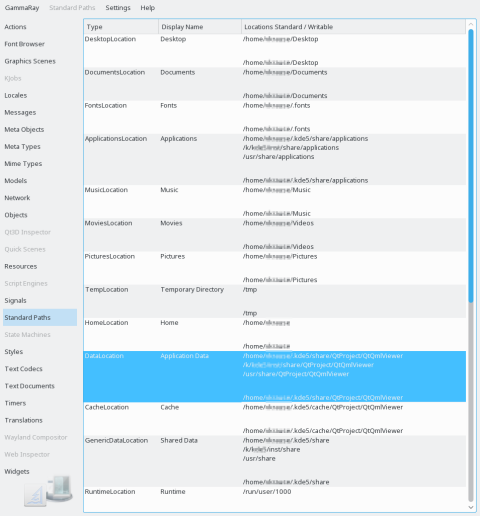

Text Codecs Object Inspection
The standard paths view provides access to the infromation of QStandardPaths. For each standard location (see QStandardPaths::StandardLocation) it shows the readable and writable locations as seen by the target process.
